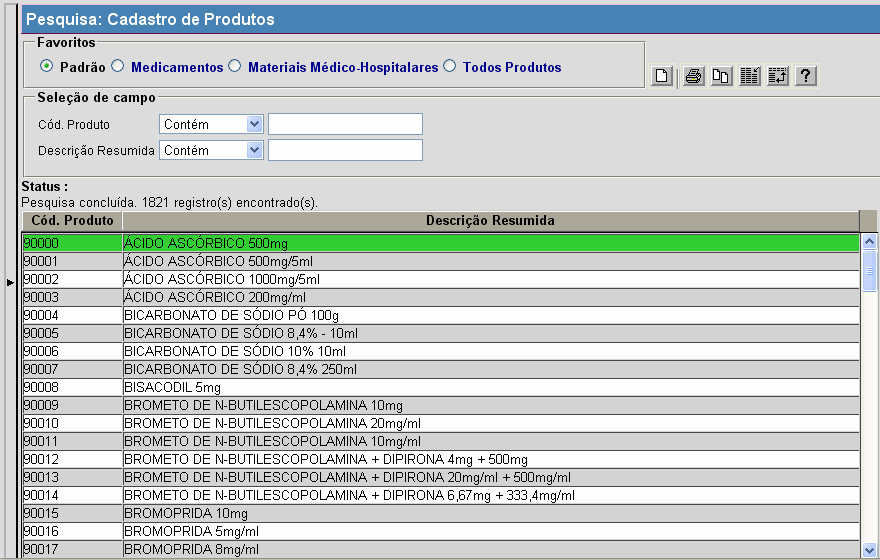

Consultar Produtos [ Voltar ]Este formulário permite a localização e conferência de dados dos produtos cadastrados.O formulário "Consultar Produtos" encontra-se dentro do menu "Cadastros". Ao clicar no formulário, o sistema exibirá a seguinte tela: 
Siga os passos abaixo para pesquisar um produto: 1° Passo: no topo da tela, selecione na seção "Favoritos" o tipo de pesquisa desejada. As opções de pesquisa são:
 Após utilizar os filtros, os resultados da pesquisa são exibidos automaticamente na tabela de resultados abaixo. Selecione com um clique o produto que deseja. |